AnyPortrait > 메뉴얼 > 지글 본
지글 본
1.4.0

"지글 본 (Jiggle Bone)"은 물리 효과가 추가되어 실제와 같이 움직이는 본을 말합니다.
특히, AnyPortrait에서는 "관성"과 "공기 저항"에 의한 물리 효과가 적용된 지글 본을 지원합니다.
AnyPortrait의 지글 본은 다음과 같은 특성이 있습니다.
- 실시간으로 본의 끝점의 위치를 감지하여 저항력과 관성을 계산합니다.
- "헬퍼 본(Helper)"이나 길이가 0인 본은 지글 본이 동작하지 않습니다.
- 위치 변화는 "유니티 씬에서의 위치 변화"와 "애니메이션에 의한 위치 변화"를 모두 포함합니다.
- 애니메이션으로 기본 형태를 만들고 지글 본을 설정하면 더욱 퀄리티가 향상됩니다.
- 중력은 적용되지 않습니다. 중력을 재현하고자 한다면 "중력이 적용된 경우의 모양"을 애니메이션으로 만들고 지글 본을 적용하세요.
- IK 체인이 설정될 필요는 없으며, 1개의 본에도 적용될 수 있습니다.
- 스크립트로 apPortrait의 물리 동작을 비활성화 하거나(SetPhysicEnabled(bool)), Important 옵션이 꺼진 경우에는 동작하지 않습니다.
- 연속된 본들을 대상으로 지글 본을 적용하면 상대적으로 더 민감하게 흔들리는 경향이 있습니다.
- AnyPortrait 에디터의 성능에 따라 시뮬레이션 결과가 다소 부정확할 수 있습니다. 실제로 유니티 씬에서 테스트를 해볼 것을 권장합니다.
- 화면 캡쳐 기능으로 영상을 녹화할 때 물리 효과를 켜면 지글 본이 적용된 상태로 녹화가 됩니다. 다만, 유니티 씬에서의 동작과 다소 차이가 있을 수 있습니다.
- 물리 충돌에 의한 움직임은 지원하지 않습니다.
이 페이지는 위 이미지와 같이 "긴 머리카락이 자연스럽게 움직이는 것"을 지글 본을 이용하여 쉽고 빠르게 만드는 방법을 다룹니다.
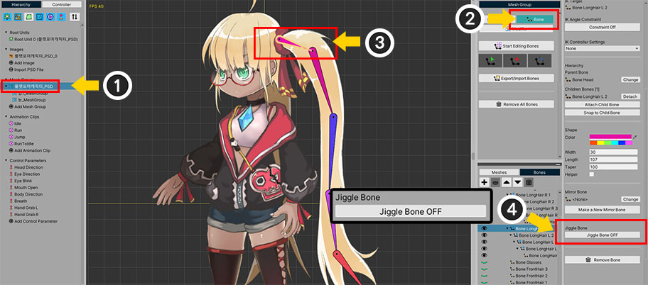
(1) 메시 그룹을 선택합니다.
(2) Bone 탭을 선택합니다.
(3) 지글 본을 적용하고자 하는 본을 선택합니다.
(4) "Jiggle Bone" 버튼을 눌러서 ON 상태로 전환합니다.
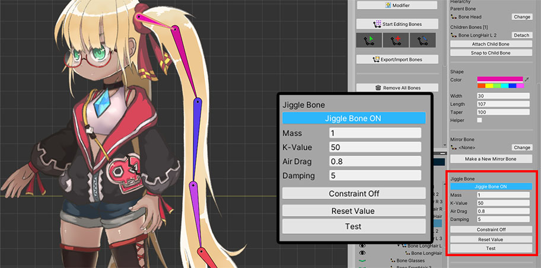
지글 본 설정을 활성화 하면 위와 같이 속성들이 나타납니다.
1. Mass : 질량입니다. 값이 커질 수록 움직임이 둔하고 무거워집니다.
2. K-Value : 원래의 형태로 돌아오려는 속성입니다. 값이 커질 수록 빠르고 탄력적으로 복원됩니다.
3. Air Drag : 공기 저항을 받는 정도이며 0에서 1 사이의 값을 가집니다. 값이 클 수록 외부의 움직임에 더 민감하고 크게 움직입니다. 이 값에 따라 지글 본 효과의 전체적인 적용 정도가 결정됩니다.
4. Damping : 감쇠력입니다. 이 값이 클 수록 흔들리는 시간이 짧아지고 빠르게 원래 형태로 복원됩니다. K-Value와 달리 이 값이 크면 탄성이 감소합니다.
5. Constraint ON/OFF : 흔들리는 각도를 제한할 수 있습니다. 제한하지 않을 경우 -180~+180도 사이의 값으로 지글 본이 적용됩니다.
6. Reset Value 버튼 : 지글 본의 속성값을 초기화합니다.
7. Test 버튼 : 이 버튼을 누르면 모든 지글 본들에 동일한 임의의 힘이 가해집니다. 속성값을 테스트해볼 수 있습니다.
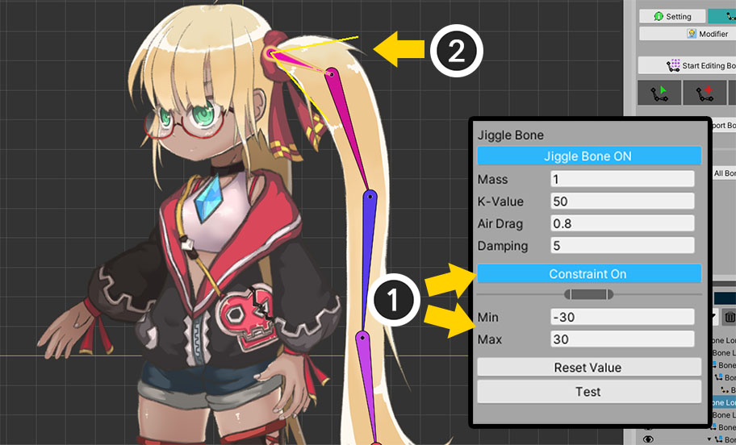
회전 범위를 제한해봅시다.
(1) Constraint 버튼을 눌러서 ON 상태로 전환하고 각도를 설정할 수 있습니다.
(2) 작업 공간에서 본의 회전 범위가 노란색 선으로 나타납니다.
이제, 지글 본은 지정된 각도 이내에서 흔들리게 됩니다.
단, 이 각도는 최대 범위이며, 실제로는 자연스러운 움직임을 위해 범위의 약 70% 정도부터 속도가 감소되기 시작합니다.
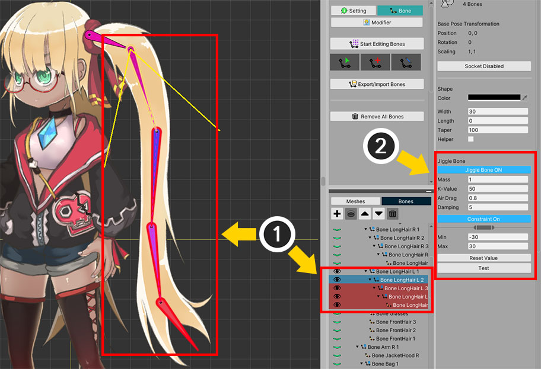
다른 본에도 지글 본을 적용합니다.
여러 개의 본들을 선택하여 한번에 지글 본을 적용할 수 있습니다.
(1) 대상이 되는 본들을 모두 선택합니다. (Ctrl 키 또는 Shift 키를 눌러서 다수의 본을 선택할 수 있습니다.)
(2) 오른쪽 UI에서 지글 본을 동시에 설정할 수 있습니다.
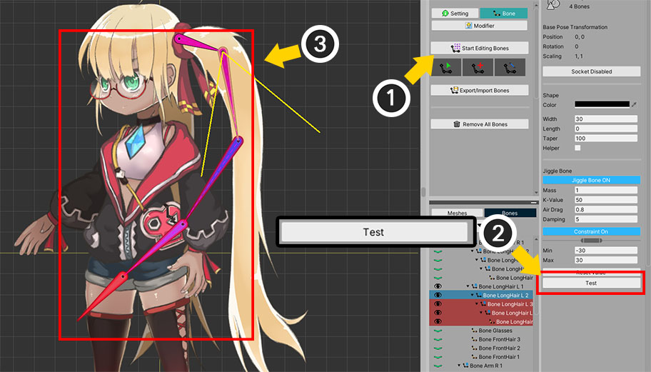
지글 본을 바로 테스트해볼 수 있습니다.
(1) 본 편집 모드를 해제합니다. (본 편집 모드에서는 지글 본이 비활성화 되며 테스트 버튼을 누를 수 없습니다.)
(2) Test 버튼을 누릅니다.
(3) 지글 본이 적용된 모든 본들이 움직이는 것을 볼 수 있습니다.
테스트 기능을 이용하여 물리 속성을 편리하게 조절할 수 있습니다.
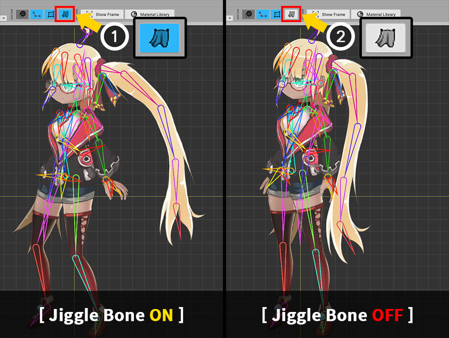
이제 루트 유닛이나 애니메이션 편집 화면에서 애니메이션을 재생하면 지글 본이 적용된 상태로 움직이는 캐릭터를 볼 수 있습니다.
작업 공간에서 위와 같이 물리 효과를 보지 않도록 설정하면 지글 본은 적용되지 않습니다.
Bake를 한 후 유니티 씬에서도 지글 본을 테스트해보세요!
컨트롤 파라미터로 가중치 제어하기
1.4.0
기본적으로 지글 본은 항상 동작하지만, 간혹 지글 본의 동작을 중지해야할 필요가 있습니다.
게임 내에서 "기절했던 캐릭터의 팔, 다리가 제멋대로 흔들리다가 다시 멈추는 것"이 대표적일 것입니다.
이 경우에 컨트롤 파라미터로 지글 본이 동작하는 정도를 조절할 수 있다면 편리할 것입니다.
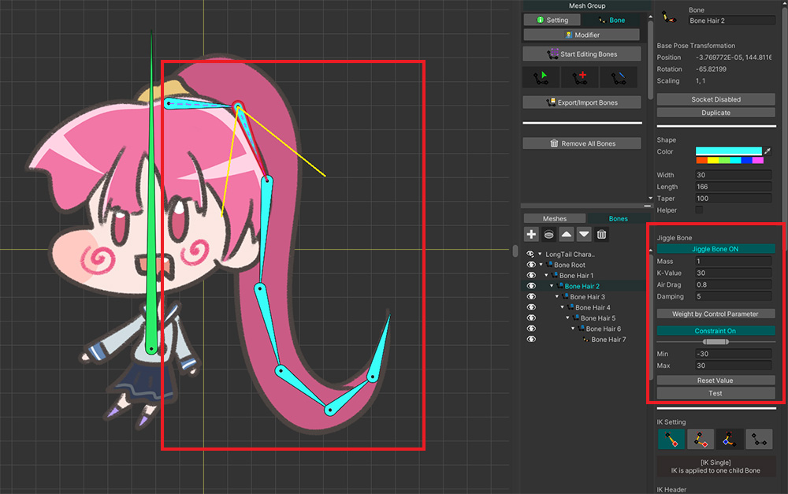
지글 본이 적용된 캐릭터를 위와 같이 준비했습니다.
캐릭터가 움직이면 기다란 머리카락이 흔들릴 것입니다.
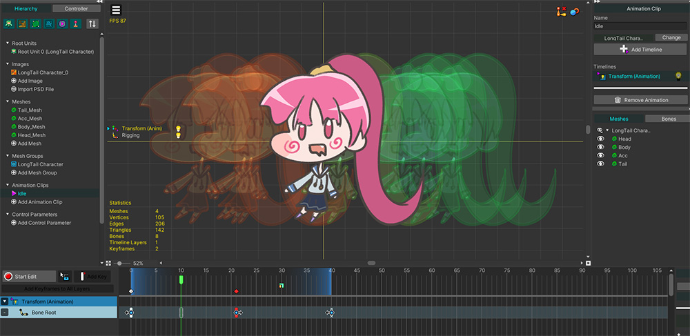
지글 본의 움직임을 확인하고자 캐릭터가 좌우로 움직이는 애니메이션을 간단히 만들었습니다.

게임을 실행하면 위와 같이 캐릭터가 움직이며 지글 본이 적용된 머리카락도 관성에 따라 움직입니다.
이제 컨트롤 파라미터와 간단한 스크립트를 이용하여 지글 본의 움직임을 조절할 것입니다.
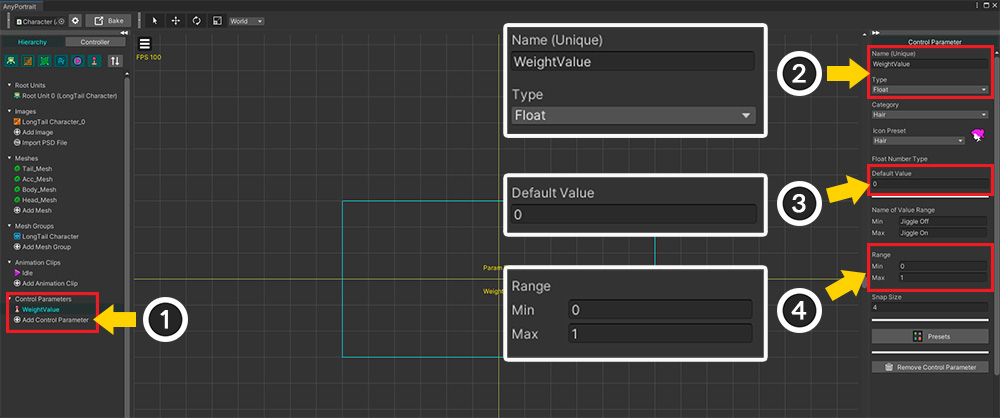
컨트롤 파라미터를 만들어서 지글 본을 켜거나 끄도록 만들어봅시다.
(1) 새로운 컨트롤 파라미터를 추가합니다.
(2) 컨트롤 파라미터의 이름을 정하고 Float 타입으로 설정합니다.
여기서는 "WeightValue"라는 이름으로 설정했는데, 이 이름을 기억해둡시다.
(3) 기본값을 0 또는 1로 설정합니다.
(4) 값의 범위를 0에서 1로 설정합니다.
지글 본의 가중치는 0.0부터 1.0 사이의 값을 가지므로, 컨트롤 파라미터도 동일하게 설정합니다.
Float외의 타입은 지원하지 않습니다.
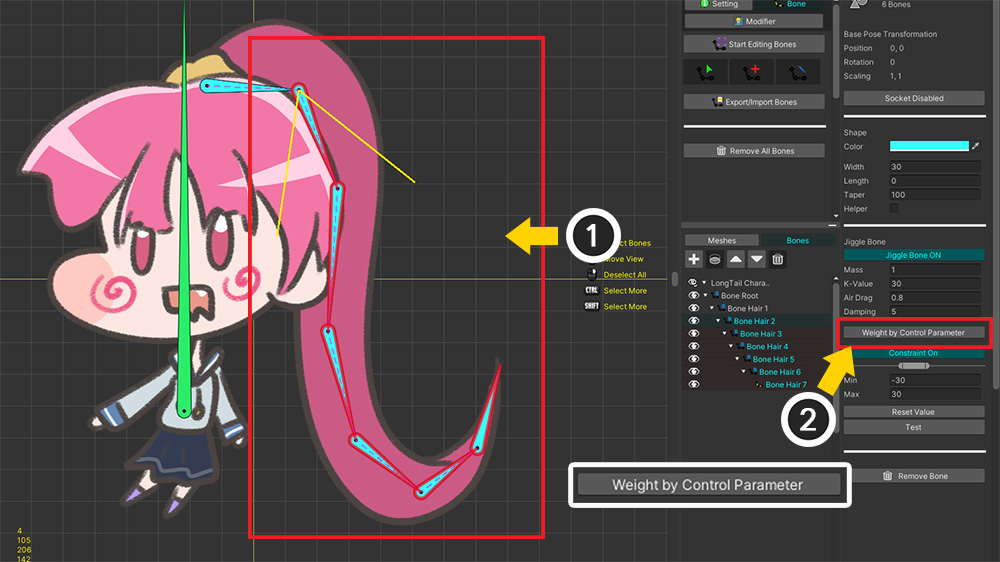
(1) 지글 본이 적용된 본들을 모두 선택합니다.
(2) Weight by Control Parameter 버튼을 눌러서 옵션을 활성화합니다.
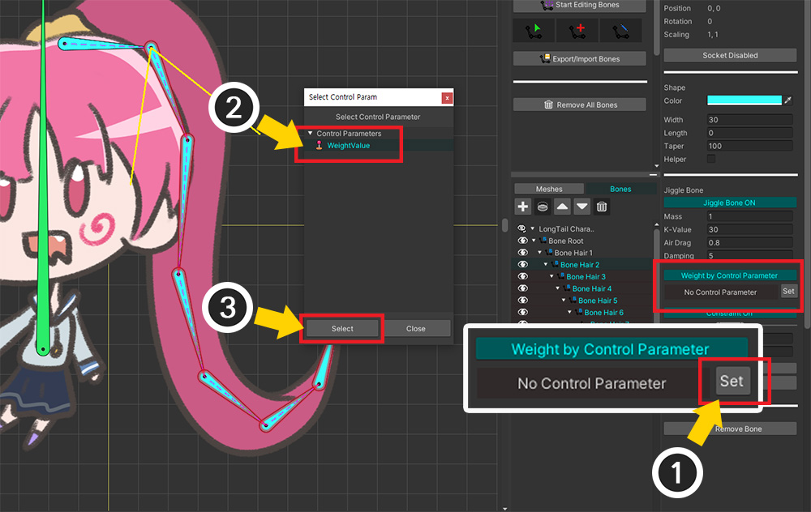
(1) Set 버튼을 누릅니다.
(2) 앞서 생성한 컨트롤 파라미터를 선택합니다.
(3) Select 버튼을 누릅니다.
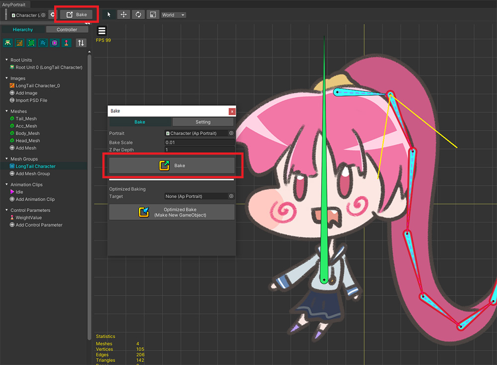
Bake를 실행하여 변경 사항을 유니티 씬에 적용합니다.
이제 새로운 스크립트를 아래와 같이 작성하여 컨트롤 파라미터를 제어해봅시다.
using UnityEngine;
using AnyPortrait;
public class WeightedJiggleBoneSample : MonoBehaviour
{
// 대상이 되는 apPortrait
public apPortrait portrait;
void Update()
{
// 숫자키를 누르면 컨트롤 파라미터의 값이 0.0, 0.5, 1.0로 바뀝니다.
if (Input.GetKeyDown(KeyCode.Alpha1))
{
portrait.SetControlParamFloat("WeightValue", 0.0f);
}
if (Input.GetKeyDown(KeyCode.Alpha2))
{
portrait.SetControlParamFloat("WeightValue", 0.5f);
}
if (Input.GetKeyDown(KeyCode.Alpha3))
{
portrait.SetControlParamFloat("WeightValue", 1.0f);
}
}
}

(1) 새로운 GameObject를 생성하고, (2) 앞서 작성한 스크립트를 추가한 뒤 apPortrait를 할당합니다.
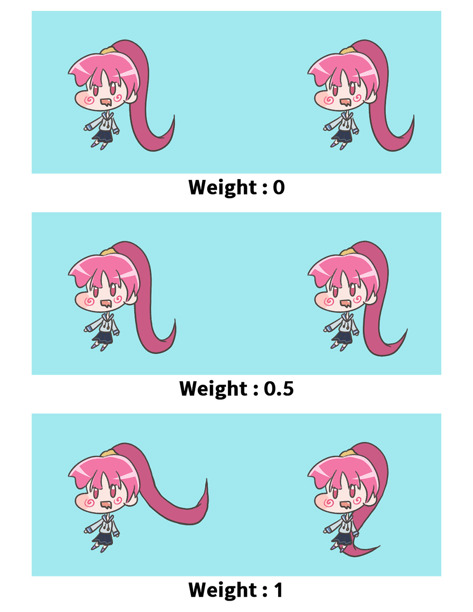
게임을 실행하고 숫자키를 눌러서 컨트롤 파라미터의 값을 0에서 1로 바꾸어봅시다.
지글 본이 적용되는 정도가 위와 같이 바뀌는 것을 볼 수 있습니다.
컨트롤 파라미터를 이용하기 때문에, 지글 본의 가중치를 스크립트 뿐만 아니라 애니메이션으로도 제어하는 것이 가능합니다.
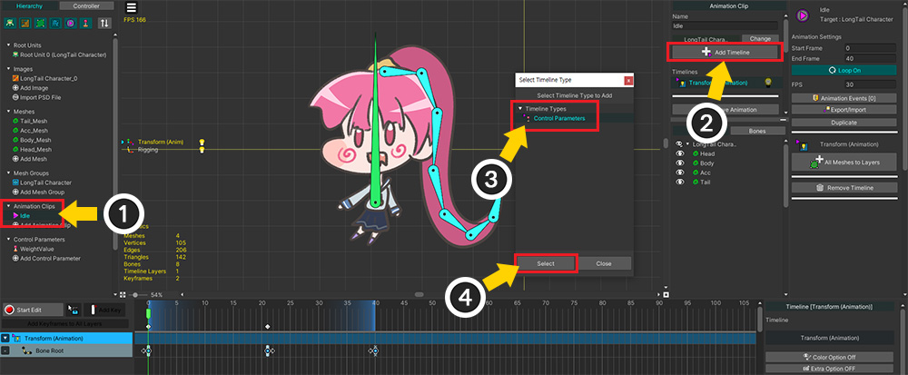
(1) 앞서 생성했던 애니메이션 클립을 선택합니다.
(2) Add Timeline 버튼을 누릅니다.
(3) Control Parameters를 선택하고 (4) Select 버튼을 누릅니다.
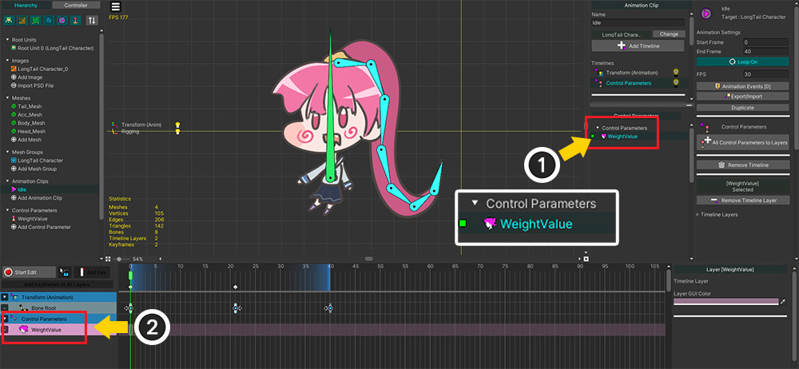
(1) "WeightValue" 컨트롤 파라미터를 (2) 타임라인에 추가합니다.
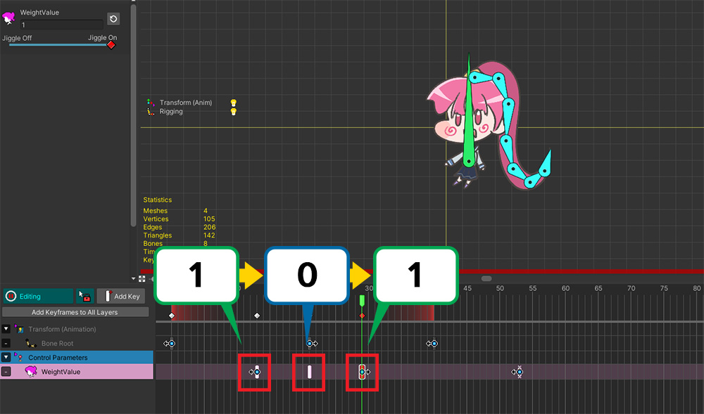
키프레임을 추가하여 컨트롤 파라미터의 값이 1에서 0으로, 다시 0에서 1로 바뀌도록 만듭니다.

Bake를 하고 게임을 실행하면, 지글 본의 가중치가 애니메이션에 따라 바뀌는 것을 볼 수 있습니다.
이 기능은 지글 본을 켜거나 끄는 용도로 사용해주세요!
"가중치"는 0에서 1 사이의 값을 가지지만, 이것은 갑자기 켜거나 끌 때 물리 연산의 "튀는 현상"을 방지하기 위함입니다.
이 기능의 명칭은 "가중치(Weight)"이지만, 실제로는 지글 본의 움직임을 가중치로 보간하는 것이 아니며, 일부 속성들을 조금씩 제한하는 방식으로 동작합니다.
따라서 가중치의 값을 길지 않은 시간동안 바꾸어 지글 본을 활성화 또는 비활성화하는 용도로 사용해주세요.